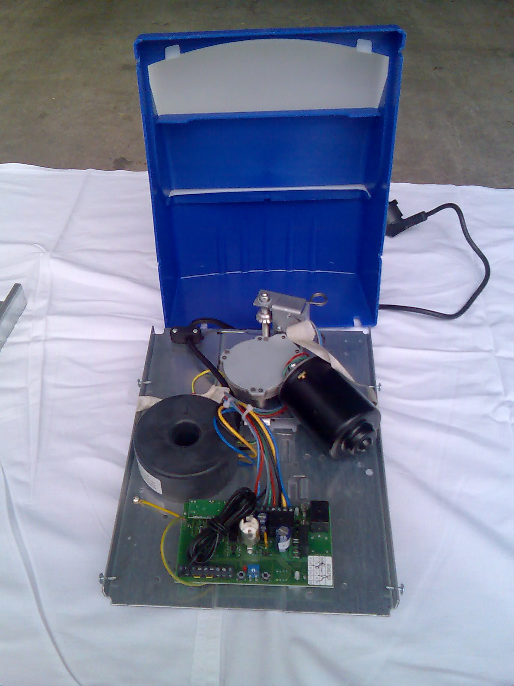

Einzelgarage – Endress I525
CHF 750.– inkl. Montage & MwSt.
CHF 349.– ohne Montage
| Zug- / Druckkraft | 500 N |
| Max. Torhöhe | 2500 mm |
| Max. Torbreite | 2400 mm |
| Mindesteinbauhöhe | 35 mm |
| Antriebsmedium | Kette |
| Handsender | 1 Stück |
| Funkfrequenz | 40.685 MHz |
| Netzspannung | 230 V / 50 Hz |
| Gewicht | ca. 14 kg |
| Garantie | 2 Jahre |